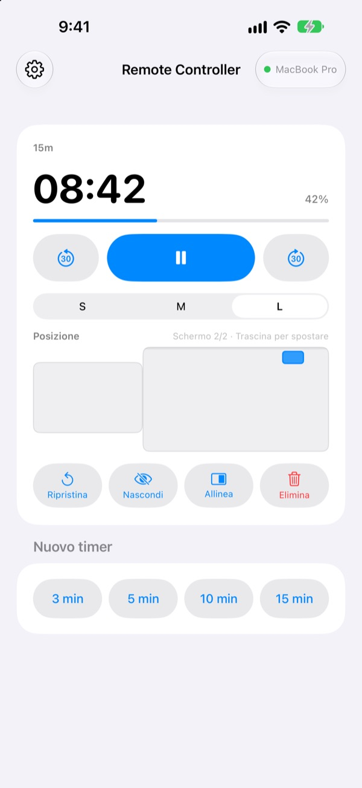
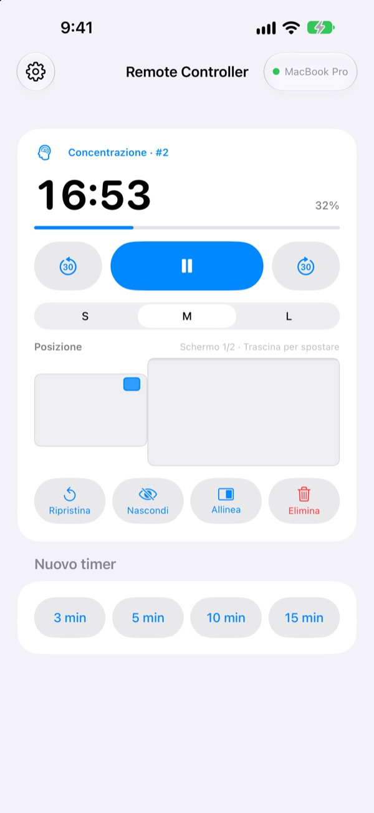
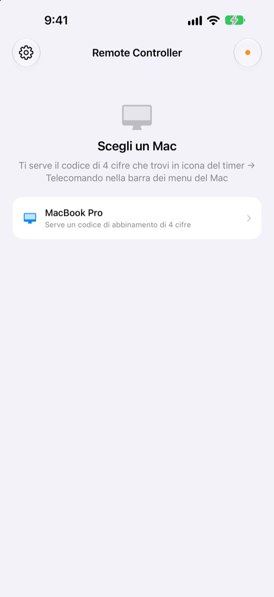

Lascia il Mac dov’è.
Il tempo resta in mano tua.
Gestisci dall’iPhone i timer di StickyPresenter sul tuo Mac. Vai davanti alla sala e continua a vedere il tempo rimasto, metti in pausa, aggiungi 30 secondi o sposta il timer dal grafico che sta coprendo.
Gratis · iOS 17 o successivo · Serve un Mac con StickyPresenter aperto sulla stessa rete Wi‑Fi.

Torni ancora al portatile solo per toccare il timer?
L’intervento si allunga e ti serve più tempo. Il timer è proprio sopra il tuo grafico migliore. Finora voleva dire attraversare il palco e cercare il trackpad davanti a tutti. Con Remote Controller resti dove sei e tocchi l’iPhone una volta.
Vedi il tempo rimasto e correggilo al volo
Tempo rimasto e avanzamento si aggiornano ogni secondo. Con il Pomodoro vedi anche se sei in Concentrazione o in Pausa e a che ciclo sei arrivato.
Ti stai dilungando? Aggiungi 30 secondi. Chiudi prima? Togline 30. Avvia un nuovo timer da 3, 5, 10 o 15 minuti con un tocco e passa il widget tra S, M e L, così si legge anche dall’ultima fila.

Inserisci il codice una volta, e basta
Apri l’app e ogni Mac della tua rete Wi‑Fi con StickyPresenter aperto compare in un elenco. Scegli il tuo e digita il codice di quattro cifre che trovi in icona del timer ▸ Telecomando, nella barra dei menu del Mac.
Da lì in poi l’app si collega da sola a quel Mac ogni volta che la apri. Niente account, niente server: i due dispositivi comunicano direttamente sulla rete locale.

Pronto in tre passaggi
- 1
Apri StickyPresenter sul Mac
Quando vedi l’icona del timer nella barra dei menu, sei pronto. L’app resta lì anche con tutte le finestre chiuse.
- 2
Apri l’app sulla stessa rete Wi‑Fi
Quando ti chiede l’accesso alla rete locale, tocca Consenti. È così che trova il tuo Mac.
- 3
Scegli il Mac e inserisci il codice
Digita il codice di abbinamento di quattro cifre che trovi in icona del timer ▸ Telecomando, nella barra dei menu del Mac, e hai il controllo.
Cosa puoi fare dall’iPhone
- Tempo rimasto
- Tempo che resta, avanzamento, fase del Pomodoro (Concentrazione o Pausa) e numero del ciclo, ogni secondo
- Avvia · Pausa
- Un unico grande pulsante al centro
- −30 s · +30 s
- I pulsanti ai lati correggono subito un timer in corso
- Nuovo timer
- 3, 5, 10 o 15 minuti
- Dimensione
- Widget in S, M o L
- Posizione
- Trascinalo su una miniatura della disposizione degli schermi del Mac, anche verso uno schermo esteso
- Nascondi
- Nasconde per un momento il widget al pubblico
- Allinea
- Riporta accanto alla finestra del timer un widget che hai perso di vista
- Ripristina · Elimina
- Fa ripartire il timer da capo o lo rimuove
- Comandi rapidi · Siri
- Di’
Avvia un timer con Remote Controllerper far partire un timer sul Mac
Il telecomando funziona solo con i timer in corso sul Mac. Le note e i testi del gobbo non vengono mai inviati all’iPhone, e non fa avanzare le slide.
Domande frequenti
Posso usare l’app per iPhone da sola?
No. Remote Controller è il telecomando di StickyPresenter per Mac, quindi StickyPresenter deve essere aperto su un Mac collegato alla stessa rete Wi‑Fi. Scarica l’app per Mac dal link qui sotto o da Scarica l’app per Mac nelle Impostazioni dell’app.
Il mio Mac non compare nell’elenco.
Se dopo 10 secondi non compare nessun Mac, l’app mostra un elenco di controlli. Seguilo dall’alto: StickyPresenter è aperto sul Mac (cerca l’icona del timer nella barra dei menu), i due dispositivi sono sulla stessa rete Wi‑Fi (le reti ospiti non funzionano), Remote Controller è attivo in Impostazioni ▸ Privacy e sicurezza ▸ Rete locale sull’iPhone, StickyPresenter è consentito in Impostazioni di Sistema ▸ Privacy e sicurezza ▸ Rete locale sul Mac e nessuna VPN è attiva.
Dice che il codice di abbinamento è sbagliato.
Inserisci le quattro cifre che vedi in questo momento in icona del timer ▸ Telecomando, nella barra dei menu del Mac. Se qualcuno ha premuto Nuovo codice di abbinamento sul Mac, vale solo il codice nuovo.
Dice che il Mac non riconosce più questo iPhone.
Succede dopo aver usato Dimentica i telecomandi abbinati sul Mac o dopo aver reinstallato StickyPresenter. Tocca il Mac nell’elenco e inserisci di nuovo il codice di abbinamento.
Dice che il Mac non risponde.
Controlla che il Mac non sia in stop, che i due dispositivi siano sulla stessa rete Wi‑Fi e che nessuna VPN sia attiva.
Dice che l’app per Mac va aggiornata.
StickyPresenter sul tuo Mac è più vecchio del telecomando. Aggiornalo dal Mac App Store, poi scegli di nuovo il Mac.
È sicuro in una sala riunioni piena di Mac?
Sì. Il telecomando parla solo con il Mac a cui è abbinato, e un telecomando che non conosce il tuo codice non può raggiungere il tuo Mac. Tutto passa da una connessione diretta e cifrata sulla stessa rete. Se hai mostrato il codice a qualcuno, premi Nuovo codice di abbinamento sul Mac.
Cosa passa da internet?
Timer e comandi non escono mai dalla rete locale. Via internet partono solo statistiche d’uso anonime, rapporti sugli arresti anomali e i commenti che scegli di inviare. I dettagli sono nell’informativa sulla privacy.
Posso far partire un timer con Siri appena prima di parlare?
Sì. Di’ «Avvia un timer con Remote Controller» oppure usa l’azione Avvia timer sul Mac in Comandi rapidi. L’app si apre e, appena si collega al Mac, avvia un timer della durata che hai scelto (da 1 a 600 minuti).
Domande, bug o idee? Scrivi a mizzking75@gmail.com, oppure inviale direttamente dall’iPhone con l’ingranaggio in alto a sinistra nell’app ▸ Invia commenti.